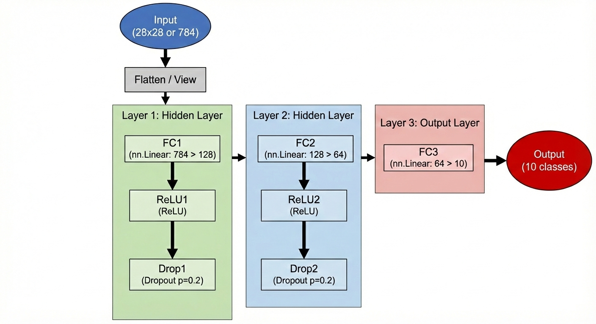

GPU Accelerated Training Demo
Draw a digit below and see if the model can recognize it!

GPU: RTX3060
Framework: PyTorch
CUDA: Enabled
このプロジェクトはMNISTデータセットを用いた深層学習デモアプリケーションです。ウェブブラウザからリアルタイムでモデルの訓練が可能です。
ニューラルネットワーク構成:
訓練設定: Adam最適化器、クロスエントロピー損失、Learning Rate: 0.001
訓練が進むにつれて、左側のロスグラフが減少し、右側の精度グラフが上昇する様子が見られます。
注意: このデモではデータセット全体の5%のみを使用しているため、完全なモデル性能には到達しません。